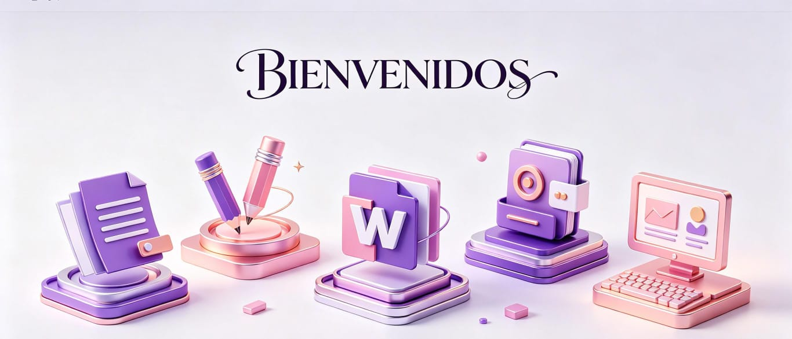
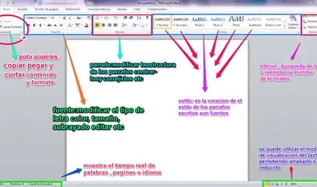
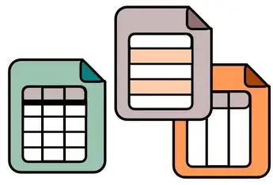
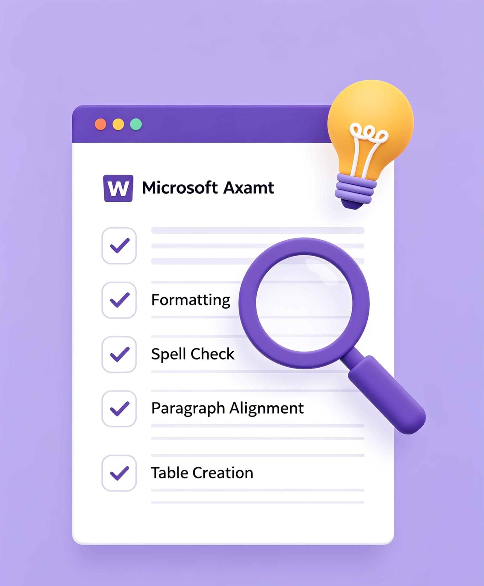

Selecciona una opción del menú para ver la información
Microsoft Word es un procesador de textos desarrollado por Microsoft que permite crear, editar y dar formato a documentos digitales. Es uno de los más utilizados a la hora de trabajar con documentos digitales, lanzado por primera vez en 1983.
La aparición de las computadoras promovió su desarrollo, ya que facilitó enormemente la redacción: permitió revisar, corregir y reformular el texto antes de imprimirlo, automatizando tareas que antes se hacían a mano. Con el paso del tiempo, Word ha evolucionado agregando herramientas avanzadas como revisión gramatical, estilos automáticos, inserción de elementos multimedia, colaboración en línea y compatibilidad con múltiples formatos de archivo. Se ha convertido en una herramienta esencial para estudiantes, profesionales y empresas de todo el mundo.

Redacción y edición: Escribe y modifica texto con facilidad, aplicando diferentes estilos.
Formato: Cambia fuente, tamaño, color, alineación y espaciado.
Inserción de elementos: Agrega imágenes, tablas, gráficos y enlaces.
Revisión: Detecta errores ortográficos y gramaticales.
Estilos y plantillas: Mantiene un diseño uniforme o usa diseños prediseñados.
Colaboración: Trabaja en equipo y realiza seguimiento de cambios.
Organización: Usa sangrías, tabulaciones y saltos de página para estructurar el contenido.
Opciones de salida: Guarda en distintos formatos y prepara el documento para imprimir.

| Función |
|---|
| Crear documentos |
| Editar texto |
| Insertar imágenes |
| Crear tablas |
| Corrector ortográfico |
| Aplicar formatos |
| Insertar gráficos |
| Guardar documentos |
| Imprimir documentos |
| Compartir archivos |
